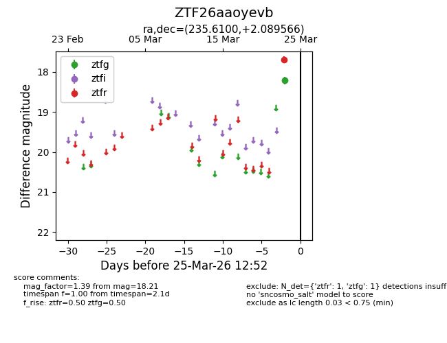
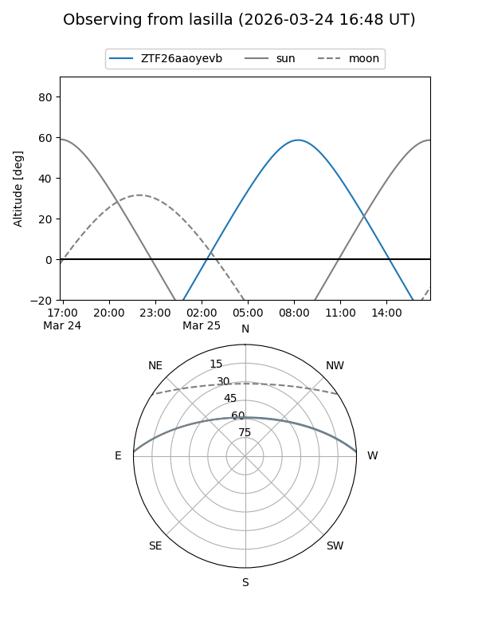
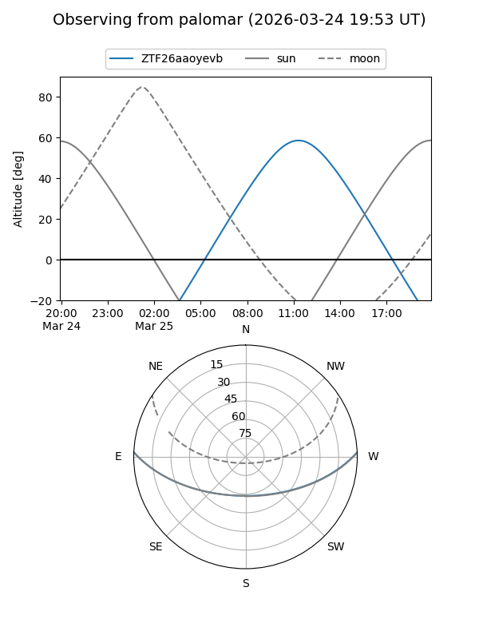

ZTF26aaoyevb
Target ZTF26aaoyevb at 2026-03-25 12:54
Aliases and brokers:
FINK: link
Lasair: link
ALeRCE: link
alt names
ZTF26aaoyevb (ztf,fink_ztf)
Coordinates:
equatorial (ra, dec) = 235.6100,+2.08957
equatorial (HMS+DMS) = 15:42:26.39,+02:05:22.44
galactic (l, b) = (8.9220,+42.04581)
Flags:
Photometry:
last ztfg=18.21, ztfr=17.69
1 ztfg, 1 ztfr detections
Lightcurve

Visibility


Additional plots